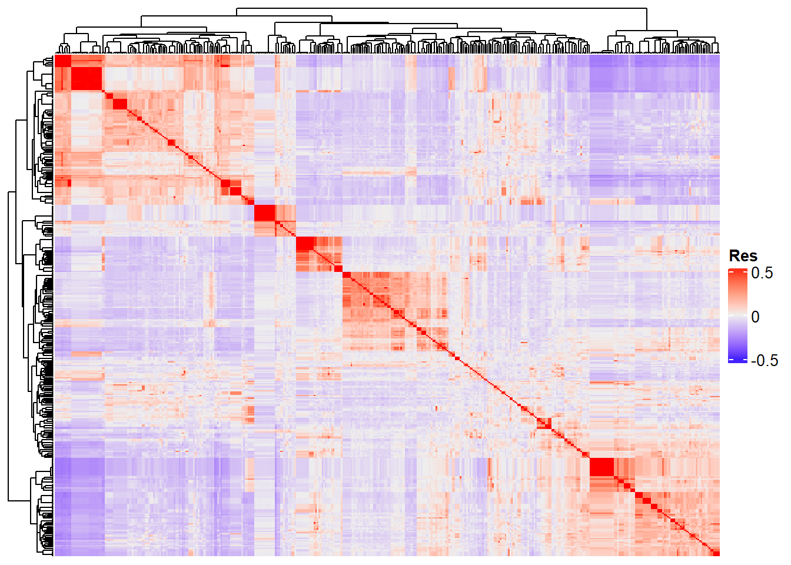
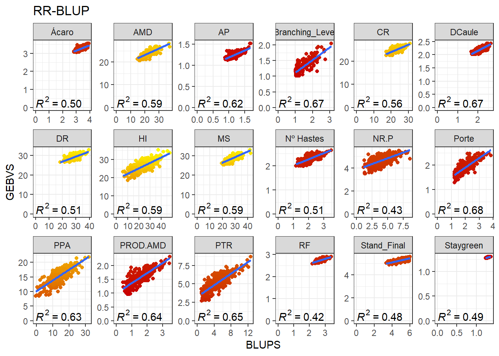
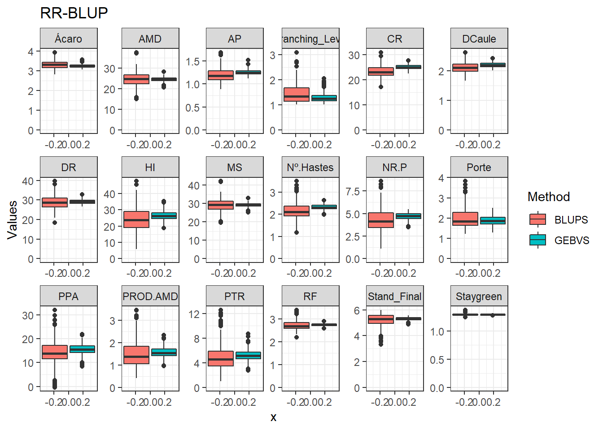
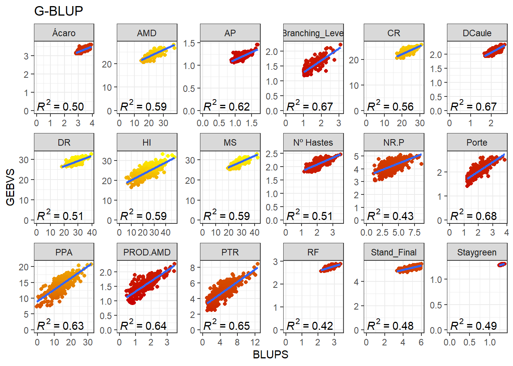
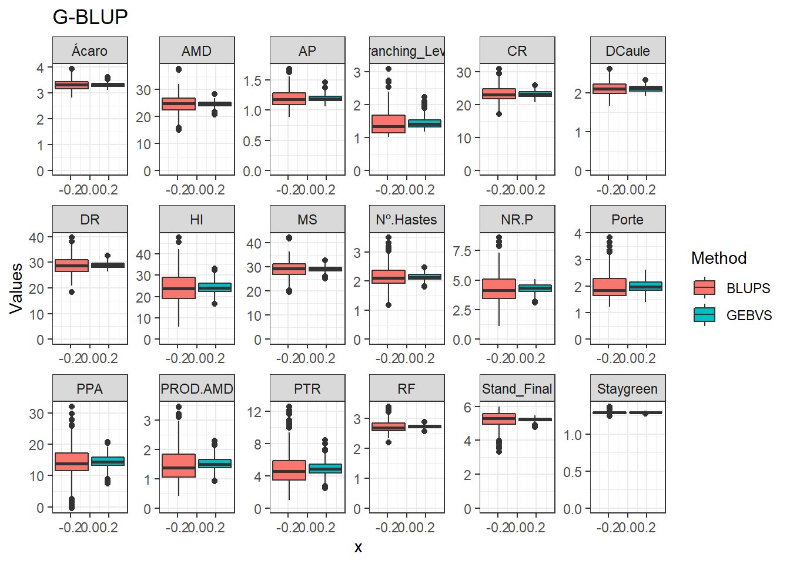
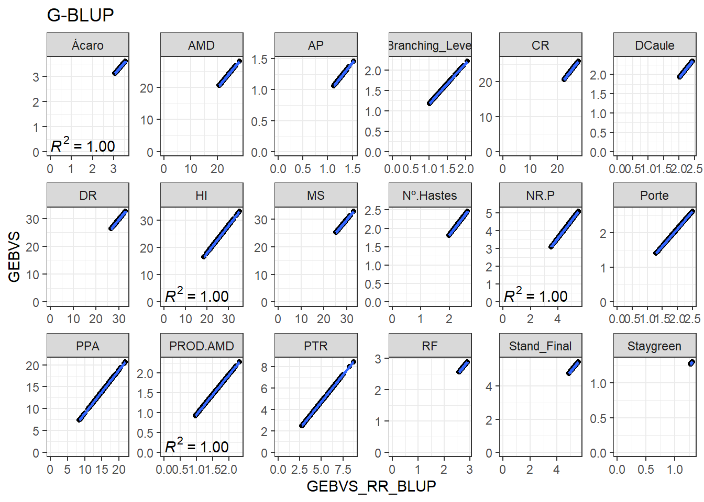
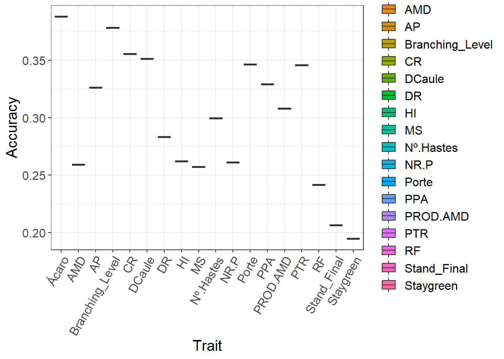

Last updated: 2022-11-10
Checks: 6 1
Knit directory:
Genomic-Selection-for-Drought-Tolerance-Using-Genome-Wide-SNPs-in-Casava/
This reproducible R Markdown analysis was created with workflowr (version 1.7.0). The Checks tab describes the reproducibility checks that were applied when the results were created. The Past versions tab lists the development history.
The R Markdown file has staged changes. To know which version of the
R Markdown file created these results, you’ll want to first commit it to
the Git repo. If you’re still working on the analysis, you can ignore
this warning. When you’re finished, you can run
wflow_publish to commit the R Markdown file and build the
HTML.
Great job! The global environment was empty. Objects defined in the global environment can affect the analysis in your R Markdown file in unknown ways. For reproduciblity it’s best to always run the code in an empty environment.
The command set.seed(20221020) was run prior to running
the code in the R Markdown file. Setting a seed ensures that any results
that rely on randomness, e.g. subsampling or permutations, are
reproducible.
Great job! Recording the operating system, R version, and package versions is critical for reproducibility.
Nice! There were no cached chunks for this analysis, so you can be confident that you successfully produced the results during this run.
Great job! Using relative paths to the files within your workflowr project makes it easier to run your code on other machines.
Great! You are using Git for version control. Tracking code development and connecting the code version to the results is critical for reproducibility.
The results in this page were generated with repository version b78c842. See the Past versions tab to see a history of the changes made to the R Markdown and HTML files.
Note that you need to be careful to ensure that all relevant files for
the analysis have been committed to Git prior to generating the results
(you can use wflow_publish or
wflow_git_commit). workflowr only checks the R Markdown
file, but you know if there are other scripts or data files that it
depends on. Below is the status of the Git repository when the results
were generated:
Ignored files:
Ignored: .Rproj.user/
Untracked files:
Untracked: analysis/figure/
Untracked: data/AllGBSandDArTClones_ReadyForGP_Dos.rds
Untracked: data/DCas22_GBSandDArT_ReadyForGP_Dos.rds
Untracked: data/allchrAR08.txt
Untracked: data/convet_haplo_diplo.txt
Untracked: output/BLUPS.RDS
Untracked: output/BLUPS.csv
Untracked: output/BLUPS_par.Rdata
Untracked: output/herdabilidade.csv
Untracked: output/media_pheno.csv
Untracked: output/resultMM.Rdata
Unstaged changes:
Deleted: BLUPS.RDS
Deleted: BLUPS.csv
Deleted: BLUPs.Rdata
Deleted: RR-BLUP-method.pdf
Modified: analysis/GWS.Rmd
Modified: analysis/phenotype.Rmd
Deleted: cor-methods-RR_BLUP.pdf
Modified: data/SNPs.rds
Deleted: deregress.Rdata
Deleted: geno.txt
Deleted: geno2.txt
Deleted: herdabilidade.csv
Staged changes:
New: BLUPS.RDS
New: BLUPS.csv
New: BLUPs.Rdata
New: RR-BLUP-method.pdf
New: analysis/GWS.Rmd
Modified: analysis/_site.yml
Modified: analysis/about.Rmd
Modified: analysis/index.Rmd
Modified: analysis/license.Rmd
New: analysis/phenotype.Rmd
New: cor-methods-RR_BLUP.pdf
New: data/Fenótipos Desregressados GBS Todos.RDS
New: data/Genomic Selection for Drought Tolerance Using Genome-Wide SNPs in Maize.pdf
New: data/Phenotyping v2.xlsx
New: data/Phenotyping.xlsx
New: data/SNPs.rds
New: data/deregress.Rdata
New: data/geno.rds
New: data/geno.txt
New: deregress.Rdata
New: geno.txt
New: geno2.txt
New: herdabilidade.csv
Note that any generated files, e.g. HTML, png, CSS, etc., are not included in this status report because it is ok for generated content to have uncommitted changes.
There are no past versions. Publish this analysis with
wflow_publish() to start tracking its development.
Yesterday, we learned how to perform genomic selection in a single environment trial. Today, we will expand the models to a multiple-environment context.
To perform the analyses, we will need the following packages:
library(readxl)
require(tidyverse)
library(kableExtra)
library(janitor)
library(genomicMateSelectR)
library(AGHmatrix)
require(ComplexHeatmap)
require(rrBLUP)
library(ggpmisc)
library(cvTools)
theme_set(theme_bw())The data set is based in genotypes evalueted in five years (2016 to 2020), each year was considered as environment.
Primeiro vamos buscar os ID dos marcadores para cada clone.
names <-
read_excel("data/Phenotyping.xlsx", sheet = "GBS") %>%
rename(Clone = `Names trials Petrolina`,
ID_Clone = `Nome GBS`) %>%
mutate(ID_Clone = str_replace_all(ID_Clone, ":", ".")) %>%
select(Clone, ID_Clone)
names %>%
head() %>%
kbl(escape = F, align = 'c') %>%
kable_classic(
"hover",
full_width = F,
position = "center",
fixed_thead = T
)| Clone | ID_Clone |
|---|---|
| 4271 | 4271.250494233 |
| 9624-09 | 962409.250370255 |
| Aipim Abacate | ERETA.250437577 |
| Alagoana | Alagoana363.250437472 |
| BGM-0004 | CNPMF4.250370278 |
| BGM-0019 | CNPMF19.250370327 |
Agora vamos agrupar os IDs dos marcadores com os nomes dos clones.
pheno <- readRDS("output/BLUPS.RDS") %>%
inner_join(names) %>% # Join Phenotypic data with Genotypics names (ID_Clones) of the Clones
mutate(Clone = as.factor(Clone),
ID_Clone = as.factor(ID_Clone))Joining, by = "Clone"pheno %>%
head() %>%
kbl(escape = F, align = 'c') %>%
kable_classic(
"hover",
full_width = F,
position = "center",
fixed_thead = T
)| Clone | NR.P | PTR | PPA | MS | PROD.AMD | AP | HI | AMD | Porte | RF | CR | DR | DCaule | Ácaro | Nº Hastes | Stand_Final | Branching_Level | Staygreen | ID_Clone |
|---|---|---|---|---|---|---|---|---|---|---|---|---|---|---|---|---|---|---|---|
| 4271 | -1.0991002 | -0.9232850 | 1.2370042 | 4.1458588 | 0.0261588 | -0.0519819 | -4.7190501 | 4.1704796 | 0.1990073 | -0.0646686 | 0.3402402 | -1.684985 | 0.1064159 | 0.0098488 | -0.2106357 | 0.2585191 | 0.2189612 | -0.0017225 | 4271.250494233 |
| 9624-09 | 2.5448509 | -1.2179385 | 2.1813479 | 0.0766224 | -0.4243017 | NA | -5.3432293 | -0.0078057 | 0.6737550 | NA | -0.2501030 | -3.687546 | NA | NA | NA | NA | -0.2181686 | -0.0500388 | 962409.250370255 |
| Aipim Abacate | 1.0022448 | 1.0140978 | 1.1807247 | 0.9060262 | 0.2158898 | 0.3327817 | 4.4575307 | 0.9313454 | -0.7791874 | 0.2490219 | 0.8804850 | -1.147279 | -0.0315661 | -0.1144109 | 1.0019293 | -0.3944873 | -0.3775248 | -0.0017225 | ERETA.250437577 |
| Alagoana | -0.6253802 | 0.1014609 | 0.1866389 | NA | NA | -0.0272367 | 0.2111938 | NA | NA | -0.0402352 | 0.3013914 | 2.457162 | -0.0021300 | -0.1964558 | NA | NA | NA | NA | Alagoana363.250437472 |
| BGM-0004 | -0.6980727 | -3.3388524 | -2.2929597 | 0.4748982 | -1.0998681 | -0.1925518 | -13.6431414 | 0.4197789 | -0.3558847 | 0.2427626 | -6.1505681 | -4.975497 | -0.1898330 | 0.1316063 | 0.8123351 | 0.1444067 | -0.0193399 | 0.0242331 | CNPMF4.250370278 |
| BGM-0019 | -2.8554890 | -2.4587770 | -5.7454297 | -3.5447503 | -0.1443845 | -0.1536869 | -14.0193447 | -3.5290772 | 0.3620398 | -0.0646686 | -5.4186360 | -3.088693 | -0.2775123 | -0.1144109 | -0.7880476 | -0.0679841 | 0.4177899 | -0.0017225 | CNPMF19.250370327 |
Agora vamos carregar os dados genotípicos dos marcadores GBS e corrigir os valores dos pares de base. Além disso, também vamos dividir a coluna alleles em duas colunas, para o alelo de referencia e o recessivo. E vamos selecionar as colunas com os nomes dos marcadores, alelos de referencia e as colunas com os IDs dos clones de acordo com os dados dos BLUPs.
geno <- read.table("data/allchrAR08.txt", header = T)
geno <- geno %>%
mutate_at(vars(12:ncol(geno)), funs(
case_when(
. == "A" ~ "AA",
. == "R" ~ "AG",
. == "W" ~ "AT",
. == "M" ~ "AC",
. == "C" ~ "CC",
. == "S" ~ "CG",
. == "Y" ~ "CT",
. == "G" ~ "GG",
. == "K" ~ "GT",
. == "T" ~ "TT",
)
)) %>%
separate(alleles, c("reference", "recess")) %>%
select(rs, reference, recess, any_of(pheno$ID_Clone))
geno[1:5, 1:20] %>%
kbl(escape = F, align = 'c') %>%
kable_classic(
"hover",
full_width = F,
position = "center",
fixed_thead = T
)| rs | reference | recess | ERETA.250437577 | Alagoana363.250437472 | CNPMF4.250370278 | CNPMF19.250370327 | CNPMF30.250370293 | CNPMF32.250370305 | CNPMF36.250370328 | CNPMF46.250370283 | CNPMF48.250370295 | CNPMF56.250370248 | CNPMF65.250370285 | CNPMF66.250370296 | CNPMF74.250370321 | CNPMF80.250370250 | CNPMF84.250370263 | CNPMF89.250370287 | CNPMF91.250370299 |
|---|---|---|---|---|---|---|---|---|---|---|---|---|---|---|---|---|---|---|---|
| S1_84637 | A | G | AA | AA | AA | AG | AA | AA | AA | AA | AA | AA | AA | AA | AA | AA | AA | AA | AA |
| S1_84843 | C | A | CC | CC | CC | CC | AC | CC | CC | CC | CC | CC | CC | CC | CC | CC | CC | CC | CC |
| S1_126260 | A | C | AA | AA | AA | AA | AA | AA | AA | AA | AA | AA | AA | AA | AA | AA | AA | AA | AA |
| S1_126261 | A | G | AA | AA | AA | AA | AA | AA | AA | AA | AA | AA | AA | AA | AA | AA | AA | AA | AA |
| S1_126264 | T | G | TT | TT | TT | TT | TT | TT | TT | TT | TT | TT | TT | TT | TT | TT | TT | TT | TT |
Agora precisamos fazer a conversão de pares de base para dosagem alélica de acordo com o alelo de referência. Também vou adcionar a coluna rs como nome das colunas. Depois vou excluir as colunas dos alelos de reference e recess.
geno <- geno %>%
mutate_at(vars(4:ncol(geno)), funs(case_when(
. == paste(reference, reference, sep = "") ~ 2,
. == paste(recess, recess, sep = "") ~ 0,
T ~ 1
))) %>%
column_to_rownames("rs") %>%
select(-c(reference, recess))
geno[1:5, 1:15] %>%
kbl(escape = F, align = 'c') %>%
kable_classic(
"hover",
full_width = F,
position = "center",
fixed_thead = T
)| ERETA.250437577 | Alagoana363.250437472 | CNPMF4.250370278 | CNPMF19.250370327 | CNPMF30.250370293 | CNPMF32.250370305 | CNPMF36.250370328 | CNPMF46.250370283 | CNPMF48.250370295 | CNPMF56.250370248 | CNPMF65.250370285 | CNPMF66.250370296 | CNPMF74.250370321 | CNPMF80.250370250 | CNPMF84.250370263 | |
|---|---|---|---|---|---|---|---|---|---|---|---|---|---|---|---|
| S1_84637 | 2 | 2 | 2 | 1 | 2 | 2 | 2 | 2 | 2 | 2 | 2 | 2 | 2 | 2 | 2 |
| S1_84843 | 2 | 2 | 2 | 2 | 1 | 2 | 2 | 2 | 2 | 2 | 2 | 2 | 2 | 2 | 2 |
| S1_126260 | 2 | 2 | 2 | 2 | 2 | 2 | 2 | 2 | 2 | 2 | 2 | 2 | 2 | 2 | 2 |
| S1_126261 | 2 | 2 | 2 | 2 | 2 | 2 | 2 | 2 | 2 | 2 | 2 | 2 | 2 | 2 | 2 |
| S1_126264 | 2 | 2 | 2 | 2 | 2 | 2 | 2 | 2 | 2 | 2 | 2 | 2 | 2 | 2 | 2 |
Para converter no formato para realizar as análises de GWS temos que transpor a matriz de marcadores.
geno <- geno %>%
t()
geno[1:5, 1:5] %>%
kbl(escape = F, align = 'c') %>%
kable_classic(
"hover",
full_width = F,
position = "center",
fixed_thead = T
)| S1_84637 | S1_84843 | S1_126260 | S1_126261 | S1_126264 | |
|---|---|---|---|---|---|
| ERETA.250437577 | 2 | 2 | 2 | 2 | 2 |
| Alagoana363.250437472 | 2 | 2 | 2 | 2 | 2 |
| CNPMF4.250370278 | 2 | 2 | 2 | 2 | 2 |
| CNPMF19.250370327 | 1 | 2 | 2 | 2 | 2 |
| CNPMF30.250370293 | 2 | 1 | 2 | 2 | 2 |
Vamos verificar quantos clones apresentam dados genotipados com os marcadores.
geno %>%
dim() %>%
t() %>%
kbl(
escape = F,
align = 'c',
col.names = c("Number of Clones", "Number of markers")
) %>%
kable_classic(
"hover",
full_width = F,
position = "center",
fixed_thead = T
)| Number of Clones | Number of markers |
|---|---|
| 414 | 27045 |
Com a filtragem dos genótipos em comum, temos 414 genótipos e 27405 marcas.
Agora vamos filtrar os SNPS usando MAF de 0.01 e verificar quantos marcadores se manterão.
geno <- maf_filter(geno, thresh = 0.01)
geno %>%
dim() %>%
t() %>%
kbl(
escape = F,
align = 'c',
col.names = c("Number of Clones", "Number of markers")
) %>%
kable_classic(
"hover",
full_width = F,
position = "center",
fixed_thead = T
)| Number of Clones | Number of markers |
|---|---|
| 414 | 22779 |
Com o filtro de MAF a 1% restaram 22779 marcadores. Vou salvar a matriz agora para que possamos carregar ela caso seja necessário.
saveRDS(geno, "data/SNPs.rds")Again, we will use the AGHmatrix package [@amadeu_aghmatrix_2016] to build the G matrix:
G_matrix <- Gmatrix(geno,
method = "VanRaden",
ploidy = 2,
missingValue = NA)Initial data:
Number of Individuals: 414
Number of Markers: 22779
Missing data check:
Total SNPs: 22779
0 SNPs dropped due to missing data threshold of 1
Total of: 22779 SNPs
MAF check:
No SNPs with MAF below 0
Monomorphic check:
No monomorphic SNPs
Summary check:
Initial: 22779 SNPs
Final: 22779 SNPs ( 0 SNPs removed)
Completed! Time = 23.2 seconds Now we have the whole G matrix (414 x 414), which we can represent using a heatmap:
Heatmap(
G_matrix,
show_row_names = F,
show_column_names = F,
heatmap_legend_param = list(title = "Res")
)
“Res” in the heatmap legend title is for “Resemblance”.
The Ridge Regression BLUP, or RRBLUP, will predict the marker effect. In the RRBLUP, we will use the matrix of markers directly. For this purpose, we will use only individuals with BLUps and SNPs available.
pheno <- pheno %>%
filter(ID_Clone %in% rownames(geno)) %>%
droplevels()For this purpose, we will use the rrBLUP package [@endelman_2011]. In the code below, y is for the vector with the means, Z is where we will insert the SNPs matrix, K is for a covariance matrix for the random effects, which will be and identity matrix by default; and X is a design matrix for the fixed effects, which will be a vector of ones (1) by default. Note that we are returning to the “1, 0, -1” codification in the SNPs matrix. This is a requirement of the rrBlUP package.
result_RR_BLUP <- data.frame(
Clone = unique(pheno$Clone),
ID_Clone = unique(pheno$ID_Clone),
stringsAsFactors = F
)
traits <- colnames(pheno)[2:19]
for (i in traits) {
RRBLUP <- mixed.solve(y = pheno[[i]],
Z = geno - 1,
K = NULL,
X = NULL)
GEBV <- geno %*% RRBLUP$u
result <- data.frame(ID_Clone = rownames(GEBV),
stringsAsFactors = F)
result[, i] <- data.frame(GEBV)
result_RR_BLUP <-
merge(result_RR_BLUP, result, by = "ID_Clone", all.x = T)
}The scatter plot above represents the additive genetic value of each marker. Once we have acquired these values, we may calculate the Genomic Estimated Breeding Values (GEBV) of the genotypes. Aqui, iremos adicionar os valores médios dos valores fenotípicos aos GEBVs obtidos pelo RR-BLUP e aos BLUPs para uma melhor comparação. These are the product of the SNPs matrix with the vector of the markers’ genetic values:
media_pheno <- read.table("output/media_pheno.csv")
colnames(media_pheno) <-
c(colnames(result_RR_BLUP[3:ncol(result_RR_BLUP)]))
for (i in traits) {
result_RR_BLUP[i] <- result_RR_BLUP[i] + media_pheno[, i]
}
GEBVS_RR_BLUP <- result_RR_BLUP %>%
pivot_longer(NR.P:Staygreen,
names_to = "Variable",
values_to = "GEBVS")
BLUPS_MED <- pheno
for (i in traits) {
BLUPS_MED[i] <- BLUPS_MED[i] + media_pheno[, i]
}
BLUPS_MED <- BLUPS_MED %>%
pivot_longer(NR.P:Staygreen,
names_to = "Variable",
values_to = "BLUPS")
data_gws_RR_BLUP <- GEBVS_RR_BLUP %>%
full_join(BLUPS_MED)Joining, by = c("ID_Clone", "Clone", "Variable")Agora vamos produzir os gráficos para cada variável comparando a correlação entre os GEBVs e BLUPs.
data_gws_RR_BLUP %>%
ggplot(aes(x = BLUPS, y = GEBVS)) +
geom_point(aes(color = GEBVS), show.legend = F) +
geom_smooth(method = lm, se = F) +
stat_poly_eq(formula = y ~ x, label.y = "bottom") +
scale_color_gradient(low = '#c80000', high = '#FFFF00') +
facet_wrap(. ~ Variable, ncol = 6, scales = "free") +
expand_limits(y = 0, x = 0) +
ggtitle("RR-BLUP")`geom_smooth()` using formula 'y ~ x'
Agora vamos comparar os modelos por meio de um boxplot.
data_gws_RR_BLUP %>%
pivot_longer(4:5, names_to = "Method", values_to = "Values") %>%
ggplot(aes(x = , y = Values, fill = Method)) +
geom_boxplot() +
facet_wrap(. ~ Variable, ncol = 6, scales = "free") +
expand_limits(y = 0, x = 0) +
ggtitle("RR-BLUP")
In the GBLUP, we will use the G matrix instead of the SNPs matrix. Thus, we will obtain the GEBV directly. Note that we will need to build the G matrix again, since some genotypes were dropped after our filtering. The rrBLUP package has a function called “A.mat” that build the Additive Genomic Matrix from a SNP matrix with “-1,0,1” codification:
result_G_BLUP <- data.frame(
Clone = unique(pheno$Clone),
ID_Clone = unique(pheno$ID_Clone),
stringsAsFactors = F
)
for (i in traits) {
GBLUP <- mixed.solve(pheno[[i]], K = A.mat(geno - 1))
result <- data.frame(ID_Clone = rownames(GBLUP$u),
stringsAsFactors = F)
result[, i] <- data.frame(GBLUP$u)
result_G_BLUP <-
merge(result_G_BLUP, result, by = "ID_Clone", all.x = T)
}Aqui, iremos adicionar novamente os valores médios dos valores fenotípicos aos GEBVs obtidos pelo G-BLUP.
for(i in traits) {
result_G_BLUP[i] <- result_G_BLUP[i] + media_pheno[, i]
}
GEBVS_G_BLUP <- result_G_BLUP %>%
pivot_longer(NR.P:Staygreen,
names_to = "Variable",
values_to = "GEBVS")
data_gws_G_BLUP <- GEBVS_G_BLUP %>%
full_join(BLUPS_MED)Joining, by = c("ID_Clone", "Clone", "Variable")Agora vamos produzir os gráficos para cada variável comparando a correlação entre os GEBVs e BLUPs.
data_gws_G_BLUP %>%
ggplot(aes(x = BLUPS, y = GEBVS)) +
geom_point(aes(color = GEBVS), show.legend = F) +
geom_smooth(method = lm, se = F) +
stat_poly_eq(formula = y ~ x, label.y = "bottom") +
scale_color_gradient(low = '#c80000', high = '#FFFF00') +
facet_wrap(. ~ Variable, ncol = 6, scales = "free") +
expand_limits(y = 0, x = 0) +
ggtitle("G-BLUP")`geom_smooth()` using formula 'y ~ x'
Agora vamos comparar os modelos por meio de um boxplot.
data_gws_G_BLUP %>%
pivot_longer(4:5, names_to = "Method", values_to = "Values") %>%
ggplot(aes(x = , y = Values, fill = Method)) +
geom_boxplot() +
facet_wrap(. ~ Variable, ncol = 6, scales = "free") +
expand_limits(y = 0, x = 0) +
ggtitle("G-BLUP")
Agora vamos produzir os gráficos para cada variável comparando a correlação entre os GEBVs do RR-BLUP e GEBVs do G-BLUP.
GEBVS_RR_BLUP <- GEBVS_RR_BLUP %>%
rename(GEBVS_RR_BLUP = GEBVS)
data_gws <- GEBVS_RR_BLUP %>%
full_join(GEBVS_G_BLUP)Joining, by = c("ID_Clone", "Clone", "Variable")data_gws %>%
ggplot(aes(x = GEBVS_RR_BLUP, y = GEBVS)) +
geom_point() +
geom_smooth(method = lm, se = F) +
stat_poly_eq(formula = y ~ x, label.y = "bottom") +
facet_wrap(. ~ Variable, ncol = 6, scales = "free") +
expand_limits(y = 0, x = 0) +
ggtitle("G-BLUP")`geom_smooth()` using formula 'y ~ x'
To prove that the prediction is accurate, we should perform a cross-validation (CV) scheme. For this purpose, we divide the data into a training set and a validation set.
First we separate the data into k folds. Then, we attribute NA for one fold and try to predict the data from this fold based on the others. When selecting the number of folds, one must prioritize the balance between the number of observations in each fold.
In addition, this process should be repeated for further validation. The step-by-step below will guide the CV in the data we are analysing.
nfolds = 5
nrept = 5Since we defined 5 folds, our data will be divided into 5 parts with 83 observations each.
The order is decreasing or increasing (numeric or alphabetical) regarding the name of the genotypes.
pheno <- pheno[order(pheno$ID_Clone, decreasing = F),]
geno <- geno[order(row.names(geno)),]
all(rownames(geno) == pheno$ID_Clone)[1] TRUEThis will be useful to assign each observation for a fold, which will be the next step.
pheno$ID <- factor(1:nrow(pheno))In this step, we will assign each observation to a fold. Bear in mind that for each repetition, the folds will comprise different observations. The purpose of the repetition is to make sure of the randomness of the assignment step.
In this step, we will use the cvTools package [@cvTools]
set.seed(100)
sort <- list()
for (a in 1:nrept) {
for (j in 1:nfolds) {
folds <- cvFolds(nlevels(pheno$ID),
type = "random",
K = 5,
R = 1)
Sample <- cbind(folds$which, folds$subsets)
cv <- split(Sample[, 2], f = Sample[, 1])
}
sort[[a]] <- cv
}
rm(a, folds, j, cv, Sample)The next step is the very CV. Here, we will define the linear predictor and the lists that will be useful in the loop. The first list, here called “fold.list”, contains the folds assignation that we built in the previous step. The second (“results_cv”) is empty and will store the outputs of each iteration of the loop.
fold.list <- sort
results <- list()
results_cv <- data.frame()Then, we will construct the loop. Each iteration will assign NA for a different fold, and we will use the other folds to predict the missing values. Note that the folds vary for each repetition.
for(j in traits) {
for (z in 1:length(fold.list)) {
for (i in 1:nfolds) {
# Training set
train_data <- pheno
# Validation set
train_data[train_data$ID %in% fold.list[[z]][[i]], j] <- NA
# Fitting model
GBLUP <- mixed.solve(train_data[[j]], K = A.mat(geno - 1))
# GEBV
Pred <- data.frame(Yhat = GBLUP$u, G = pheno$ID)
rownames(Pred) <- rownames(geno)
# Predicted GEBV
results[[i]] <- Pred[Pred[, "G"] %in% fold.list[[z]][[i]], ]
# Remove
#rm(GBLUP, Pred, train_data)
}
GEBV <- do.call(rbind, results)
GEBV <- GEBV[order(GEBV$G), ]
# Log
log <- all(GEBV$G == pheno$ID)
# Results
result_cv <- data.frame(
Trait = j,
Rep = z,
Log = log,
Ac = round(cor(GEBV$Yhat, pheno$MS, use = "na.or.complete"), 3),
MSPE = round(mean(((GEBV$Yhat - pheno$MS) ^ 2
), na.rm = T), 3)
)
results_cv <-
rbind(results_cv, result_cv)
}
}
results_cv %>%
kbl(escape = F, align = 'c') %>%
kable_classic(
"hover",
full_width = F,
position = "center",
fixed_thead = T
)| Trait | Rep | Log | Ac | MSPE |
|---|---|---|---|---|
| NR.P | 1 | TRUE | 0.103 | 10.639 |
| NR.P | 2 | TRUE | 0.127 | 10.585 |
| NR.P | 3 | TRUE | 0.122 | 10.596 |
| NR.P | 4 | TRUE | 0.133 | 10.573 |
| NR.P | 5 | TRUE | 0.131 | 10.574 |
| PTR | 1 | TRUE | 0.142 | 10.678 |
| PTR | 2 | TRUE | 0.163 | 10.565 |
| PTR | 3 | TRUE | 0.173 | 10.517 |
| PTR | 4 | TRUE | 0.180 | 10.451 |
| PTR | 5 | TRUE | 0.146 | 10.652 |
| PPA | 1 | TRUE | 0.112 | 13.087 |
| PPA | 2 | TRUE | 0.161 | 12.618 |
| PPA | 3 | TRUE | 0.168 | 12.267 |
| PPA | 4 | TRUE | 0.169 | 12.151 |
| PPA | 5 | TRUE | 0.136 | 12.541 |
| MS | 1 | TRUE | 0.238 | 10.168 |
| MS | 2 | TRUE | 0.246 | 10.111 |
| MS | 3 | TRUE | 0.262 | 10.034 |
| MS | 4 | TRUE | 0.300 | 9.784 |
| MS | 5 | TRUE | 0.204 | 10.416 |
| PROD.AMD | 1 | TRUE | 0.133 | 10.604 |
| PROD.AMD | 2 | TRUE | 0.171 | 10.552 |
| PROD.AMD | 3 | TRUE | 0.180 | 10.542 |
| PROD.AMD | 4 | TRUE | 0.197 | 10.518 |
| PROD.AMD | 5 | TRUE | 0.149 | 10.582 |
| AP | 1 | TRUE | 0.055 | 10.742 |
| AP | 2 | TRUE | 0.040 | 10.745 |
| AP | 3 | TRUE | 0.055 | 10.742 |
| AP | 4 | TRUE | 0.090 | 10.732 |
| AP | 5 | TRUE | 0.074 | 10.736 |
| HI | 1 | TRUE | 0.122 | 13.563 |
| HI | 2 | TRUE | 0.116 | 13.747 |
| HI | 3 | TRUE | 0.130 | 13.678 |
| HI | 4 | TRUE | 0.138 | 13.020 |
| HI | 5 | TRUE | 0.125 | 13.677 |
| AMD | 1 | TRUE | 0.238 | 10.170 |
| AMD | 2 | TRUE | 0.246 | 10.107 |
| AMD | 3 | TRUE | 0.263 | 10.028 |
| AMD | 4 | TRUE | 0.301 | 9.783 |
| AMD | 5 | TRUE | 0.205 | 10.410 |
| Porte | 1 | TRUE | -0.074 | 10.873 |
| Porte | 2 | TRUE | -0.107 | 10.914 |
| Porte | 3 | TRUE | -0.097 | 10.910 |
| Porte | 4 | TRUE | -0.082 | 10.881 |
| Porte | 5 | TRUE | -0.103 | 10.915 |
| RF | 1 | TRUE | 0.153 | 10.703 |
| RF | 2 | TRUE | 0.147 | 10.705 |
| RF | 3 | TRUE | 0.145 | 10.703 |
| RF | 4 | TRUE | 0.147 | 10.706 |
| RF | 5 | TRUE | 0.152 | 10.705 |
| CR | 1 | TRUE | 0.115 | 10.777 |
| CR | 2 | TRUE | 0.123 | 10.755 |
| CR | 3 | TRUE | 0.142 | 10.656 |
| CR | 4 | TRUE | 0.144 | 10.629 |
| CR | 5 | TRUE | 0.146 | 10.631 |
| DR | 1 | TRUE | 0.125 | 10.849 |
| DR | 2 | TRUE | 0.114 | 10.931 |
| DR | 3 | TRUE | 0.116 | 10.973 |
| DR | 4 | TRUE | 0.138 | 10.795 |
| DR | 5 | TRUE | 0.108 | 11.022 |
| DCaule | 1 | TRUE | 0.115 | 10.711 |
| DCaule | 2 | TRUE | 0.097 | 10.719 |
| DCaule | 3 | TRUE | 0.150 | 10.696 |
| DCaule | 4 | TRUE | 0.132 | 10.703 |
| DCaule | 5 | TRUE | 0.115 | 10.712 |
| Ácaro | 1 | TRUE | -0.221 | 10.875 |
| Ácaro | 2 | TRUE | -0.189 | 10.863 |
| Ácaro | 3 | TRUE | -0.204 | 10.867 |
| Ácaro | 4 | TRUE | -0.239 | 10.883 |
| Ácaro | 5 | TRUE | -0.224 | 10.877 |
| Nº Hastes | 1 | TRUE | 0.028 | 10.745 |
| Nº Hastes | 2 | TRUE | 0.066 | 10.717 |
| Nº Hastes | 3 | TRUE | 0.040 | 10.736 |
| Nº Hastes | 4 | TRUE | 0.061 | 10.721 |
| Nº Hastes | 5 | TRUE | 0.059 | 10.722 |
| Stand_Final | 1 | TRUE | 0.047 | 10.733 |
| Stand_Final | 2 | TRUE | 0.076 | 10.715 |
| Stand_Final | 3 | TRUE | 0.056 | 10.728 |
| Stand_Final | 4 | TRUE | 0.028 | 10.744 |
| Stand_Final | 5 | TRUE | 0.019 | 10.750 |
| Branching_Level | 1 | TRUE | -0.055 | 10.837 |
| Branching_Level | 2 | TRUE | -0.073 | 10.853 |
| Branching_Level | 3 | TRUE | -0.049 | 10.830 |
| Branching_Level | 4 | TRUE | -0.099 | 10.880 |
| Branching_Level | 5 | TRUE | -0.057 | 10.838 |
| Staygreen | 1 | TRUE | 0.134 | 10.750 |
| Staygreen | 2 | TRUE | 0.085 | 10.751 |
| Staygreen | 3 | TRUE | 0.086 | 10.751 |
| Staygreen | 4 | TRUE | 0.111 | 10.750 |
| Staygreen | 5 | TRUE | 0.087 | 10.751 |
write.csv(results_cv, "output/results_cv.csv")The object “result_cv” is divided by repetition. In the “result_cv” objects for each repetition, “Rep” is the number of the repetition, “Log” is a diagnostic indicating if the order of the predicted breeding values matches the order of the adjusted means, “Ac” is the prediction accuracy (correlation between the GEBV and adjusted means), and “MSPE” is the mean square prediction error (the lower, the better).
Agora vamos plotar os resultados de acurácias para cada característica
results_cv %>%
group_by(Trait) %>%
summarise(
mean.Ac = mean(Ac),
sd.Ac = sd(Ac),
mean.MSPE = mean(MSPE),
sd.MSPE = sd(MSPE)
) %>%
ggplot(aes(x = Trait, y = mean.Ac , fill = Trait)) +
geom_col(alpha = 0.8,
width = 0.85,
show.legend = F) +
geom_errorbar(
aes(ymin = mean.Ac - sd.Ac, ymax = mean.Ac + sd.Ac),
width = .2,
position = position_dodge(.9)
) +
ylim(-0.3,0.3)+
labs(y = "Accuracy")
sessionInfo()R version 4.1.3 (2022-03-10)
Platform: x86_64-w64-mingw32/x64 (64-bit)
Running under: Windows 10 x64 (build 19042)
Matrix products: default
locale:
[1] LC_COLLATE=Portuguese_Brazil.1252 LC_CTYPE=Portuguese_Brazil.1252
[3] LC_MONETARY=Portuguese_Brazil.1252 LC_NUMERIC=C
[5] LC_TIME=Portuguese_Brazil.1252
attached base packages:
[1] grid stats graphics grDevices utils datasets methods
[8] base
other attached packages:
[1] cvTools_0.3.2 robustbase_0.95-0 lattice_0.20-45
[4] ggpmisc_0.5.1 ggpp_0.4.5 rrBLUP_4.6.1
[7] ComplexHeatmap_2.10.0 AGHmatrix_2.0.4 genomicMateSelectR_0.2.0
[10] janitor_2.1.0 kableExtra_1.3.4 forcats_0.5.2
[13] stringr_1.4.1 dplyr_1.0.10 purrr_0.3.4
[16] readr_2.1.2 tidyr_1.2.1 tibble_3.1.8
[19] ggplot2_3.3.6 tidyverse_1.3.2 readxl_1.4.1
loaded via a namespace (and not attached):
[1] googledrive_2.0.0 colorspace_2.0-3 rjson_0.2.21
[4] ellipsis_0.3.2 rprojroot_2.0.3 circlize_0.4.15
[7] snakecase_0.11.0 GlobalOptions_0.1.2 fs_1.5.2
[10] clue_0.3-61 rstudioapi_0.14 farver_2.1.1
[13] MatrixModels_0.5-1 fansi_1.0.3 lubridate_1.8.0
[16] xml2_1.3.3 splines_4.1.3 codetools_0.2-18
[19] doParallel_1.0.17 cachem_1.0.6 confintr_0.2.0
[22] knitr_1.40 polynom_1.4-1 jsonlite_1.8.0
[25] workflowr_1.7.0 broom_1.0.1 cluster_2.1.2
[28] dbplyr_2.2.1 png_0.1-7 compiler_4.1.3
[31] httr_1.4.4 backports_1.4.1 assertthat_0.2.1
[34] Matrix_1.5-1 fastmap_1.1.0 gargle_1.2.1
[37] cli_3.3.0 later_1.3.0 htmltools_0.5.3
[40] quantreg_5.94 tools_4.1.3 gtable_0.3.1
[43] glue_1.6.2 Rcpp_1.0.9 cellranger_1.1.0
[46] jquerylib_0.1.4 vctrs_0.4.1 nlme_3.1-159
[49] svglite_2.1.0 iterators_1.0.14 xfun_0.32
[52] rvest_1.0.3 lifecycle_1.0.3 googlesheets4_1.0.1
[55] DEoptimR_1.0-11 MASS_7.3-58.1 zoo_1.8-11
[58] scales_1.2.1 hms_1.1.2 promises_1.2.0.1
[61] parallel_4.1.3 SparseM_1.81 RColorBrewer_1.1-3
[64] yaml_2.3.5 sass_0.4.2 stringi_1.7.6
[67] highr_0.9 S4Vectors_0.32.4 foreach_1.5.2
[70] BiocGenerics_0.40.0 boot_1.3-28 shape_1.4.6
[73] rlang_1.0.6 pkgconfig_2.0.3 systemfonts_1.0.4
[76] matrixStats_0.62.0 evaluate_0.17 labeling_0.4.2
[79] tidyselect_1.2.0 magrittr_2.0.3 R6_2.5.1
[82] magick_2.7.3 IRanges_2.28.0 generics_0.1.3
[85] DBI_1.1.3 mgcv_1.8-40 pillar_1.8.1
[88] haven_2.5.1 withr_2.5.0 survival_3.4-0
[91] modelr_0.1.9 crayon_1.5.2 utf8_1.2.2
[94] tzdb_0.3.0 rmarkdown_2.17 GetoptLong_1.0.5
[97] git2r_0.30.1 reprex_2.0.2 digest_0.6.29
[100] webshot_0.5.4 httpuv_1.6.5 stats4_4.1.3
[103] munsell_0.5.0 viridisLite_0.4.1 bslib_0.4.0 Weverton Gomes da Costa, Pós-Doutorando, Embrapa Mandioca e Fruticultura, wevertonufv@gmail.com↩︎